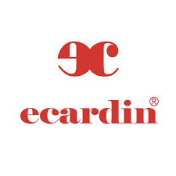
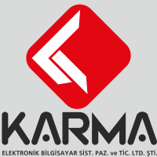
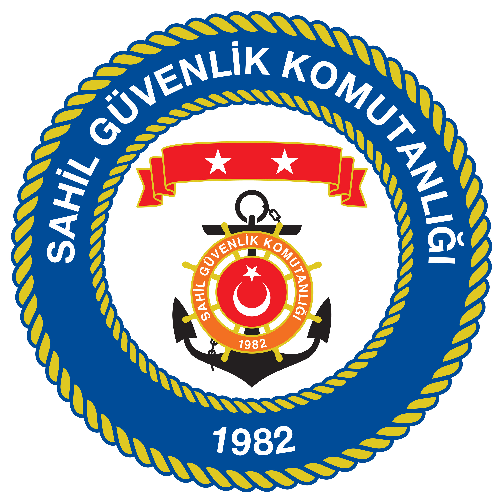

Çağatay ÖZÇEKER
DİA Erp Destek Uzmanı
| Telefon |
: |
0542 383 51 34 |
| E-Posta |
: |
cozceker@gmail.com |
| Adres |
: |
Mehmet Akif Mh. Şahinbey Cd. No: 73/5, 34782 Çekmeköy, İstanbul, TÜRKİYE |
Hakkımda
Merhaba, ben Çağatay Özçeker. Deniz Astsubay M.Y.O’dan 2010 yılında mezun oldum. Sahil Güvenlik Komutanlığı bünyesinde Antalya, Hatay ve İzmir’de görev yaptım. Bu süre zarfında içinde Anadolu Üniversitesi İşletme lisans eğitimi tamamladım. 2019 yılında görevimden emekli olduktan sonra bilgisayarlı genel muhasebe eğitim aldım. Bu doğrultuda önce ön muhasebe sonrasında ön muhasebede kullandığım ERP programın yetkili iş ortağı bünyesinde destek personeli olarak, sonrasında ise bir tekstil firmasında üretim ve muhasebe müdürü olarak görev yaptım. Halihazırda ERP proje yöneticisi olarak çalışmaktayım.
En büyük enerji kaynağım yeni şeyler öğrenmektir. Öğrendiğim bilgilerden gerek kendime, gerek çevreme fayda sağlamak ise en büyük hobim diyebilirim.
Yetenekler
- ERP(Kurumsal Kaynak Planlama)
- Üretim Yönetimi
- Muhasebe Yönetimi
- Satış ve Satınalma Yönetimi
- Depo Yönetimi
- ETAV8, Logo Go Plus, Mikro V15, Luca, Dia
- HTML , CSS ,Microsoft Office
İş Deneyimleri
| |
Nortek Bilişim |
| Proje yöneticisi ve destek ekibi müdürlüğü görevlerini yapılması. |
|  |
Ecardin Tekstil |
| Üretim ve Muhasebe Müdürlüğü görevlerinin yapılması. |
|
Nortek Bilişim |
| Dia Erp Programı destek uzman yardımcılığı. |
|  |
Karma Elektronik |
| Ön muhasebe ve satış sipariş kayıtları ve takibinin yapılması. |
|  |
Sahil Güvenlik Komutanlığı |
| TCSG-304 Bot Komutanlığı Elektronik Astsb. İskenderun/Hatay |
| Sahil Güvenlik Hava Komutanlığı İkmal Astsb. Gaziemir/İzmir |